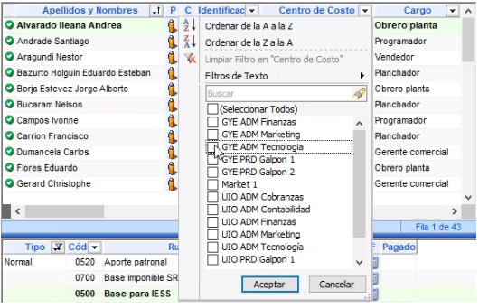
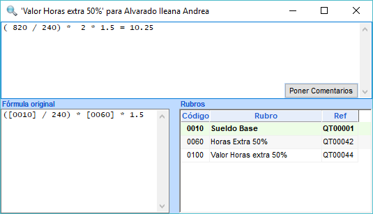
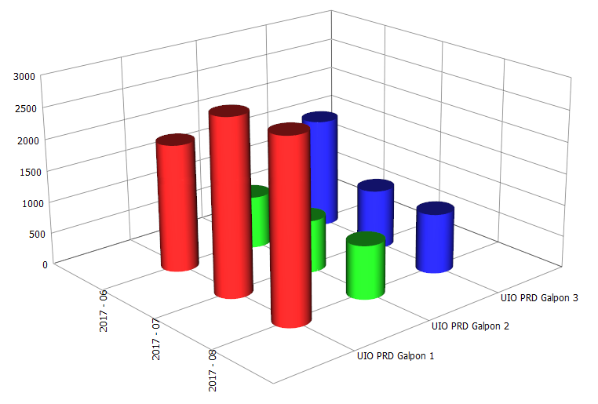

Este módulo lo ayudará a realizar todo lo concerniente al Rol de pagos de sus empleados, mediante una fácil configuración de fórmulas o scripts, al estilo de una hoja de cálculo como Microsoft Excel. Genera por ejemplo: archivos de acreditación bancaria, archivos batch para el IESS, archivos batch para el Ministerio de Relaciones Laborales, formularios y archivos del SRI, contratos, liquidaciones, envío de rol por email, etc.
Es el complemento ideal para el ERP de su empresa (SAP, Dynamics AX, JDEdwards, ínfor) u otro sistema Administrativo Financiero.



Solicite información y asesoría para una cotización.